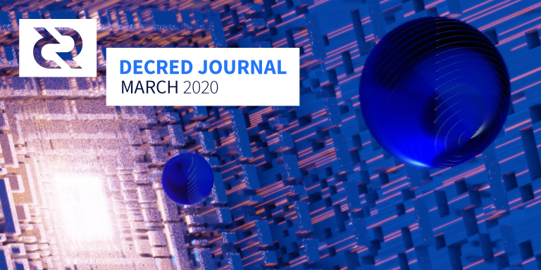

Decred月报 - 2020年3月

图片: Expand Vector by @saender
三月重点:
- DCP-0005已激活, 这为Decred网络的轻量级客户端（SPV）用户带来史无前例的安全性和隐私保护。同时，任何仍在运行v1.4版本的客户端将被分叉，请尽快升级到最新版本。
- Decred DEX撮合了测试网上的第一笔由原子交换驱动的交易。
- 本月几乎所有关键的代码库都取得了惊人的进展，请在下面查看。
- 利益相关者批准的美国(英语内容创作)和巴西营销的年度预算为28.6万美元，其中的一些资金，用来继续制作《Decred月报》。
- 本期是Decred月报的第24期，标志着Decred项目的每月报道持续了两年时间！
开发进展总结
除非另有说明，否则此处报告的工作仅限为“合并到主核心存储库”状态。这意味着这项工作已经完成、审查并集成到高级用户可以构建和运行的源代码中，但对于普通用户来说，还不能在发布的二进制文件中使用。
dcrd:
- ECDSA签名 与 secp256k1 软件包分离，从而清楚表明ECDSA只是一种可能的数字签名算法，并使Schnorr签名成为代码库的一级签名
- 导出的字段值类，以允许外部调用者执行优化的数学字段
- 通过谨慎精简化的操作来进一步优化签名验证
- 添加了从内存中清除私钥的方法，并减少了私钥的内部副本数量，从而增强了防止内存刮取的安全性
- 从签名解析和签名操作中完全删除大整数，而使用专门的mod n标量代码
- 对schnorr验证重新设计以解决多个问题
- 防止在几个方面滥用代码
- 删除未使用的多余代码
披露了一个漏洞，该漏洞允许多天内存耗尽攻击，可能导致dcrd v1.4.0中的节点崩溃。3月13日，网络分叉了dcrd v1.5.0中实现了新共识规则，这意味着网络上的所有节点都必须以最新版本运行。由于此版本和更高版本包含该漏洞的修复程序，因此现已解决
根据CoinCode.sh 的分析，dcrd 与 btcd 的代码重叠少于16％，这意味着84％是新的开发工作。经过 @davecgh 确认，鉴于已编写的新代码，数字似乎合理，并指出dcrwallet中的差异甚至更为明显（尚未分析）
fundrawtransaction实现的命令可添加未签名的输入并将输出更改为原始交易- 钱包操作已切换为使用版本2的过滤器（不建议使用v1过滤器，但仍由网络提供并由dcrwallet使用，下一版本将使用v2过滤器）
getaddressesbyaccount固定的命令也返回该imported帐户的导入地址- 未加密的P2SH兑换脚本已移至地址管理器存储中（这简化了存储并消除了解锁钱包以查看或存储脚本的要求）
- 对效率和语义的进行改进
- 清除不推荐使用的和未使用的代码
正在开发中:
- CoinShuffle++隐私保护的集成
- 更改密码使种子无效
- 测试改进和bug修复
tlog集成已经开始，预计需要2个月的时间。在2019年7月的月报中，我们不准确地报告了tlog集成的开始，但该工作实际上仅是开始研究，旨在作为概念验证并证明Google的Trillian数据存储可以替代现有的Git后端。它在八月份进行了合并，并包含一个具有基本功能的客户端/服务器，用于存储文档。这项工作经验提供了足够的见解，知道它会起作用。下一步是编写使用Trillian的Politeia后端。
tlog后端的主要优点是它将使Politeia具有更高的可延展性，并允许在公开内容之后审查内容，同时保留对所有已提交数据的审核记录。它还将允许正确解决重复注释的bug。
CMS:
- 分配提案所有权的功能，该功能将在即将进行的更改中使用，以使提案所有者查看针对他们的提案收取的费用
- 可以停用已付款发票上的临时承包商帐户并需要获得管理员批准才能允许其他发票
- 十月开始的重新设计工作终于合并了。较大的更改将增加9K行代码和删除24K行代码
视觉更新的背后，重新设计的CMS总结了迁移politeiagui代码 snew经典的UI过程，以pi-ui库。早在2018年，snew允许Redite风格的外观和感觉迅速使Politeia脱颖而出，但很快就变得难以开发。构建pi-ui并切换到它可以改善代码模块化，并提供了灵活的方式来组成和样式化UI组件，以使其符合设计规范，并提高性能。
- 代码维护，bug处理和消除，增加文档，升级依赖关系和增加测试
- 对系统进行改进
正在开发:
- 新的chainscan软件包，它使用提交的筛选器来更有效地检测与LN节点相关的事务，并且还可以在SPV模式下运行
- 使用嵌入式和远程dcrwallet作为事件源的chainntnfs软件包的实现。这允许将dcrlnd与基础dcrd进一步解耦，这是让dcrlnd实例以SPV模式运行的要求
- 在上面的基础上，为远程钱包启用和测试SPV模式（“远程钱包”是dcrlnd连接到已经运行的dcrwallet实例的连接模式，即不需要带有单独种子的自己的嵌入式钱包）
移动LN钱包需要SPV模式。即使在台式机钱包中，SPV可能仍将是主导的同步模式，因此dcrlnd支持SPV模式至关重要。这也是我在LN的公告中概述的“路线图”中“立即工作”部分的最后一项，因此，总结了从lnd到dcrlnd的大部分移植工作。结束此次SPV的任务意味着我们可以开始探索Decred中可用的更多奇特更改（例如PTLCs依赖@davecgh也得出结论的Schnorr工作）。（@matheusd）
- DEX客户端的命令行控制应用程序
- 通过客户端浏览器GUI下订单的能力
- 备份和还原客户端密钥和其他帐户数据（较早的#183添加了客户端订单数据的备份）
- 客户跟踪纪元订单，并在纪元结束时验证订单改组和匹配
- 取消比率计算，使服务器能够可靠地跟踪用户的已完成订单与已取消订单，并能够从数据库中重建任何用户最近的订单历史记录。这是社区行为执法的重要组成部分。
- 代码库重构和清理
一个重要的里程碑是撮合交易的完成。这是客户端的最后一个重要部分，它能够执行交换。使客户经历整个交换过程（撮合交易），与服务器进行通信，对交易对手交易进行必要的审计，并根据交换过程的要求创建和广播自己的合同和赎回交易。
6个贡献者总共合并了19个拉取请求，添加了11K行代码并删除了3K行代码（在此处提交摘要）。
祝贺dcrdex团队在testnet上完成了第一个由订单驱动的原子交换！
- 添加统计信息页面
- UI调整和修复
下一个版本的测试网版本可在此处获得。
下一个版本的测试网版本可在此处获得。
- 原始JSON图表数据的通用URL 已添加到图表页面
- 小调整和bug修复
- Staking视图显示已完成，未完成和正在等待被选的门票
- 简单帐户视图
- 创建帐户并发送DCR的简单视图
- 帐户发现
- 更改测试以使用内存数据库
- 将整体测试覆盖率提高到98%，并修复了此过程中发现的一些错误，现在所有文件的覆盖率至少为94％
3个贡献者合并了总共56个拉取请求，添加了11K行代码和6K行代码（请在此处提交摘要）。
docs:
- dcrlnd文档已更新为最新版本0.2.1，将命令分为几类
- 添加了有关如何加入Matrix的指南
- 通货膨胀页已重命名为“发行”以消除歧义
- 记录了作为Tor隐藏服务访问CoinShuffle ++服务器
其他：
- 大多数项目升级为使用Go 1.14构建，并放弃了对Go 1.12的支持
- @mm发布了DigiSign Oracle，这是一个免费的开源Web应用程序，可帮助最终用户验证数字签名。它的创建是为了帮助Decred用户验证软件包签名，而不必使用复杂的命令行程序。您可以在stakey.club上访问它，或将源代码下载到您的计算机上并使用网络浏览器打开。
v1.6版本计划
v1.6的粗略计划是在第二季度末发布。我们计划包括：去中心化的社区开发基金共识变更，Decrediton的Staking和非Staking CSPP支持，基于选票的VSP支持以及无数dcrd改进。(@jy-p 在2020-03-20)
人员
欢迎新的首次贡献者，他的代码已合并到主代码库中： @unimere (decrediton).
社区统计：
- Twitter 粉丝: 40,694 (-207)
- Reddit 订阅: 9,760 (+22)
- Matrix 用户: 601 (+36)
- Discord 用户: 1,160 (+73), 已验证发布: 479 (+29)
- Telegram 用户: 2,607 (-71)
- YouTube 订阅: 3,980 (-10)
- Facebook 粉丝: 3,606 (+26), 喜欢: 3,273 (+24)
- LinkedIn 粉丝: 744 (+25)
- GitHub dcrd 星星: 536 (+1), 分叉: 1,507 (+11)
治理
3月份，社区开发基金获得了13,713 DCR，并花费了17,153 DCR。以3月份的每日 DCR/USD 汇率 $ 13.40计算，这是收到的$ 184K和花费的$ 230K。以2月份的每日平均价格$ 20.48计算，该月完成工作的美元费用为$ 281K。截至4月3日，库存余额为640K DCR（741万美元，折合11.58美元）。
本月发布了4个新提案。
DCRComic团队提出的新提案要求预算16,200美元，以制作12部漫画以及其它活动，并为每部漫画额外增加150美元，以花费更多时间调整产品以供社交媒体使用。在有人批评Stakey被过度使用来代表Decred生态系统中的许多不同角色之后，该提案被搁置以重新设计角色。4月6日对提案进行了修改，以添加新角色，这些角色将与Stakey一起加入阵容，并于4月9日开始投票。
在社区根据COVID-19削减到177,800美元后，美国市场营销提案被批准，获得74％的支持和31％的投票率。
巴西的营销提案也获得了批准，该提案要求在今年余下时间提供$ 108K，获得65％的支持，投票率达到34％。编辑该提案的目的是，在COVID-19局势持续存在的情况下，不会组织活动或为活动付费，但该项目并未从预算中删除，某些活动可能会在今年晚些时候进行。
提交了另外两个提案，正在讨论中。PolisPay App的一项提案寻求5,000美元以支持DCR。还有一个建议为Decred Daily Twitter 帐户提供资金6个月并为其建立一个网站（总预算$ 5,280）。Decred Daily提案于4月9日开始投票。
i2 Trading的做市提案已经历六个月的做市活动，该活动于2019年10月下旬开始，因此将在2020年4月下旬结束.i2的交易日志由Company 0 审查，发现性能令人满意。i2计划提交一份提案，以继续进行做市活动，但将按比例缩小以反映当前的市场状况。
有关本月“Politeia活动”的更多详细信息，请参见《Politeia摘要》第29期。
网络
全网算力: 3月份的哈希率以〜359 Ph/s开启，以〜309 Ph/s结束，最低为274 Ph/s，并在整个月达到556 Ph/s的峰值。截至4月1日的池哈希率分布：UUPool 55％，Poolin 18％，lab.antpool.com 17％，Luxor 2.5％，BTC.com 2.2％，F2Pool 1.5％，BeePool 0.13％，CoinMine 0.08％，Suprnova 0.02％和其它〜3.8％。池分配数是近似值，无法准确确定。
Staking:30天的平均票价为141.9 DCR（+9.8）。该价格 130.9-166.8 DCR之间变化。锁定金额为550-575万DCR，相当于参与 PoS 的可用供应量的49.05-51.27％。
选票价格突破了166.82，这是自Staking难度算法更改以来的新高。
区块大小：本月，区块链大小增加了129 MB。块的平均大小为14.5 KB。最小的块为1.62 KB，最大的块为374.98 KB。
交易：3月，Decred用户进行了49,078次常规交易，并购买了44,149张门票。奖励了43791张门票，其中728张已被撤销。平均而言，每天有1,583次常规DCR交易和1,424张新票。
节点：整个3月，每个dcr.farm平均有146个公共侦听节点，总共246个对等节点。3月的平均版本分布：28％dcrd v1.5.1、20％dcrd v1.4、15％dcrd v1.5、8％dcrd v1.5开发人员和RC版本，5％dcrd v1.6开发人员版本，5％dcrwallet v1.5.1、5％dcrwallet v1.4、2％dcrwallet v1.5。3月13日，新的共识规则被激活，之后dcrd v1.4不再遵循该规则。请尽快更新！
整合
Probit 增加了对DCR / KRW和DCR / USDT对的支持。
Exmo.com 在3月13日的共识协议变更发生的几天后DCR突然中断，服务于第二天恢复。目前，Exmo是唯一由利益相关者资助的整合。
ChangeNOW在2019年推出的NOWPayments支付处理器支持40多种资产其中包含DCR 。
ChainRift 在2月宣布，他们将关闭交易所运营，并转向一家软件开发公司。
DCR已添加到FTX PRIV-PERP指数期货合约中，该合约跟踪一篮子9枚隐私硬币。索引可以在这里找到。
由于VSP d1pool.com在没有通知的情况下关闭，并且他们无权使用其兑换脚本，用户AGspearo无法访问其资金。AGspearo在解决该问题上花费了大量时间来提供支持，但最终他们无法获得资金。@davecgh将其分解，并表示可能达成共识更改可能解决这些问题。如果您正在阅读本文档，但没有备份兑换脚本，请发出警告，并进行备份和存储，然后再添加种子。
已通知某些损坏了注册页面/过期/返回错误的VSP，它们将从列表中删除。他们中的一些人已经回答并解决了问题。raqamiya.net，tokensmart.io和dcrpos.idcray.com已被删除，因为它们无法响应。
警告：Decred Journal的作者不了解上述任何服务的可信赖性。在将您的个人信息或资产信任给任何实体之前，请先进行自己的研究。
外展活动
Decred in Depth在三月发行了两集新播客，在四月初发行了一集，而Rough Consensus也发行了两集（请参阅下面的媒体）。
@dezryth 发布了有关他2月月份的Decred Facebook帐户操作的第二次更新。这是一个更详细的内容，包括每个帖子的统计信息，与竞争对手的比较，并分享一些有关下一步的想法。@dezryth承认当前的统计数据并不好，很难建立自然的追随者，但好的一面是，主动发布的每日观看次数增加了30％。
@bee（在2019年营销报告中发表了广泛的评论，并分享了他的愿景。
对Decred 常见误解和批评的全面汇编已添加到decredcommunity Wiki，以及对它们的回应。欢迎反馈/贡献，这里是讨论。
Monde PR在三月份的成就：
- 针对目标记者的宣传和介绍
- 对当前新闻报道发表反应性评论
- 提交Decred发言人对7个新闻故事的评论
- 决定将3个即将推出的功能
- 将@richardred撰写的思想领导力文章提交给ValueWalk
- 获得2次媒体采访
Monde PR保证的新闻报道：
- Cointelegraph中的一篇文章，内容来自@ jy-p对共识模型的评论
- 《金融大亨》中的一篇文章，内容来自@richardred的有关远程工作的评论
- CoinDesk中的一篇文章，内容来自@ jy-p关于快速扩展的评论，该评论也联合了Yahoo Finance
活动
参加：
- 3月4日 - Decred Meetup - 阿根廷拉普拉塔。Decred项目的简介，其中@ camilolwi，@ tomee和@pablito讨论了Decred的基础知识，安全性和混合共识模型，治理，投票以及如何成为该项目的承包商。大约有20位与会者参加了聚会和一次网络会议。 (照片)
- 3月4日 - Decred Meetup - 委内瑞拉加拉加斯。这次聚会是由Uninet商学院和Innova顾问共同主办的。共有15位与会者参加了此次聚会，并介绍了Decred，其安全性和混合模式，隐私，如何做出贡献，以及随后的问答环节和网络交流。 (照片)
- 3月4日 - Crypto and Blockchain 2020 and Beyond - 澳大利亚墨尔本。这场有80余人的活动向Crypto Fire Alliance收取了入场费，以帮助应对丛林大火（该活动筹集了1000美元，而整个计划筹集了27000美元的加密货币）。@eSizeDave参加了一个小时的小组讨论，并指出：“听众对我的问题比其他任何人都要多，并因此获得了很多后续会议”。(报告, 视频)
- 3月5日 - Decred Meetup - 委内瑞拉瓦伦西亚。由ClicTechNova和CoWorking Lab共同主持。这次聚会是对Decred生态系统，混合区块链，治理机制，隐私以及使Decred成为DAO的元素的介绍。大约有50位与会者提出了有关网络上的社会攻击，如何贡献和DCR激励模型的有趣问题。(照片, 视频)
- 3月6日 - Impact Hub - 委内瑞拉加拉加斯。由El Dorado和Cointigo共同主办。这次聚会介绍了Decred生态系统，其治理结构以及使其与其他货币不同的原因。大约有30人参加了会议，一些企业家和开发人员，还有一些加密货币新用户正在寻找有关技术和投资机会的更多信息。(照片, 视频)
- 3月8日 International Women's Day - 洛哥卡萨布兰卡。该活动在科学大学ENSAM举行。70名与会者中，大多数是数据科学专业的学生和开发人员。@arij在关于区块链和Decred的研讨会上进行了1个小时的演讲，随后又举行了一个研讨会：“我从我的谈话和解释区块链技术和Decred的经验中学到的是，当人们向他们展示事物如何真正与演示一起工作时，人们会更加感兴趣和视频，尤其是这是他们第一次学习它。” (笔记, 照片)
- 3月12日 - Bitcoin Woman to Woman - 墨西哥城。由比特币大使馆共同主持的约30人聚会旨在讨论妇女在加密货币行业的参与以及如何授权妇女使用加密货币。@francov_做了一个关于如何为Decred项目做出贡献的演讲，以及她在行业中的工作经验。“演讲的重点是表达我们不需要您的头衔，性别，国籍，年龄，甚至您的真实姓名，我们只需要您的才能和抱负即可帮助Decred生态系统发展。” 见面之后进行了一次社交会议。(report)
- 3月12日 - Decred Meetup - 拉圭蒙得维的亚。大约有25人参加了聚会。@tomee介绍了Decred及其安全性，适应性和可持续性，礼节，治理以及如何做出贡献。这次聚会也是一次社交会议，有些人从Labitconf知道了这个项目。(照片: 1, 2)
- 3月12日 - Blockchain Summit Latam - 拿马巴拿马城。该活动原定于10月15日至16日举行，但此更改发生在活动开始前24小时，当时已有一些演讲者在该地区（约35人）。活动人员利用这次机会举办了一次小型聚会，主持人有机会与他们进行交流，并从近处了解项目。@adcade和@elian与一些代表进行了交谈，并获得了西班牙Cointelegraph 的采访。(报告)
- 3月12日 - Hablemos Decred 01 - 互联网。第一次西班牙在线会议“ Let's Talk Decred”是使用Decred的Discord服务器。大多数问题都与Decred的PoS投票系统有关。那些对加密有一定了解的人问如何下注，而那些不想更多地了解投票权以及利益相关者可以如何使用票的人。约有15人中的三分之一是该项目的新手。(报告)
- 3月18日 - Exchanges in LATAM - 互联网。@elian在虚拟聚会中与@AvaLatam，@blockchain_land和virica.io墨西哥的人们讨论了集中式和分散式交流。大约有16人参加了会议，一个教训是，在线讲座应在30分钟以内。
- 3月24日 - Decred Webinar - 互联网。@tomee和@camilolwi在与智利Blockchain Academy联合举办的网络研讨会上讨论了Decred的所有内容以及去中心化区块链治理的挑战。(视频)
- 3月27日 - Hablemos Decred 02 - 互联网。西班牙的第二次在线聚会探索了Jitsi，以联系来自阿根廷，墨西哥，玻利维亚，智利的13位参与者，其中7位是该项目的新成员。这次电话会议以关于Decred的介绍性演讲，Decrediton的演示以及开放式的提问和评论麦克风开始。(report)
- 3月29日 - Binance AMA - 互联网。该活动由8,000多名成员在Binance Spanish Telegram组中主持，并获得了很高的参与度。@ adcade，@ elian和@pablito从73位参与者中获得了155个问题，并将0.333 DCR授予了最佳问题。收集了大量知识，可以表明潜在的Decred用户缺少信息的地方。这是Binance西班牙人社区的第二次Decred AMA，是迄今为止他们最长的AMA（〜2.5小时）。(report)
- 3月30日 - Decred and Sound Money Virtual Meetup - 互联网。该活动由@eSizeDave和@zohand主持，并由@Checkmate参加，讨论关键主题，例如稳健的货币，宏观经济环境，黄金和Decred。参与者对质量印象深刻，并留下了良好的反馈，其中一位对它的“精神刺激”感到满意。(报告)
取消:
- 4月5日 - Toronto Blockchain Week - 加拿大多伦多。
即将到来的:
- 4月13日至17日 - Jalisco Talent Land @ Home - 互联网。在名为“ Decred，加密货币和货币的未来”的小组中，Decred LATAM团队将简要介绍Decred，并探讨加密货币将如何改变远程工作以及我们与货币的互动。该小组讨论会将于4月15日21:00（CST，UTC-5）在人才网站land.tv上直播。
- 4月16日 - Decred Webinar -互联网。主题将是“让我们谈论加密货币和货币的未来” –由Ibero（大学）主办的网络研讨会，讨论加密并概述Decred。
- 5月14日 - BlockConf - 互联网。Decred LATAM团队将为Decred运行一个虚拟展位，以回答与会者的问题。如果有人希望在48小时活动中在多个时区保持摊位处于活动状态，请联系@elian。
- 5月30日至31日 - Bitconf - 巴西圣保罗。Decred将就各个主题进行多次演讲。
- 6月或更晚的时间 - Campus Party Amazonia - 巴西马瑙斯。从三月起搬家。
- 6月或更晚 - Jalisco Talent Land - 墨西哥瓜达拉哈拉。
- 2020 年底 - DevOpsDays - 巴西纳塔尔。
推迟到另行通知：
- CIBTC Blockchain Summit - 西班牙莫特里尔。
- Decred Meetup - 玻利维亚拉巴斯。
- Bitcoinference - 墨西哥坎昆。
媒体
decredpower.info是一个新的单页目录，用于浏览Decred的所有内容。欢迎在这里提出建议。
精选文章：
- @Checkmate在ProgPoW辩论期间观察以太坊治理(medium)
- @Dustorf认为加密货币风险不是您所想的 (medium)
- @Cato_io的赛博朋克社会契约的三个支柱理论。(medium)
- @mrbulb的公共服务，流行病和加密网络 (medium)
- Decred:在熊市期间您的发展将如何继续？通过@adcade (in Spanish, es.cointelegraph.com)
媒体从有趣的“对巴西投资”的角度报道了巴西市场营销和活动计划 提案（葡萄牙语）：
- “ Decred的社区允许在巴西投资超过500,000巴西雷亚尔” (criptofacil.com)
- “加密货币将在巴西投资超过一百万美元” (livecoins.com.br)
- “'Whales'批准并Decred可以投资超过500,000巴西雷亚尔来促进巴西的加密货币” (cointelegraph.com.br) - 这是一篇写得不好的文章，它基于另一篇采访(@emiliomann)
- “在巴西投资最多的加密货币” (cointimes.com.br)
翻译：
- 密码朋克社会契约中的三个支柱理论- 西班牙文，@ francov_
- Decred的技术简介- @arij 阿拉伯语
- 2020年2月的Decred月报被翻译成阿拉伯文（@arij），中文（@Dominic）和西班牙文（@francov_）。所有这三个文件都存储在Git中，这有助于长期保存工作并保护其不受审查。谢谢大家！
视频：
- Decred的2020年美国和巴西市场营销和出版提案（@Exitus） (youtube)
- Decred 双周新闻更新 - 2020年3月12日 by @Exitus (youtube)
- Decred 双周新闻更新 - 2020年3月31日 by @Exitus (youtube)
- 2020年最优秀的5个Staking币(youtube)
音频:
- Decred in Depth Ep. 19 - Iterative资本的Leo Zhang讨论了工作量证明挖掘，给出了矿业经济学的第一手资料，并考虑了混合PoS组件和正式的利益相关者决策的好处。 (libsyn, youtube, soundcloud)
- Decred in Depth Ep. 21 - @Exitus谈论为Decred DAO制作视频内容，成为承包商以及在熊市期间加密营销面临的挑战。(libsyn, youtube)
- Rough Consensus Ep. 2 - @ mr.black，@ Checkmate和@permabullnino讨论了三项记账的概念，以及它如何为分析共识机制提供框架。从理论上讲，PoW，PoS和混合安全系统提供不同的安全性和分类帐保证。(libsyn)
- Rough Consensus Ep. 3 - @ mr.black，@ Checkmate和@permabullnino讨论了由COVID-19触发的最新宏观转变，历史上最长的股票牛市的爆发以及加密货币如何在未来发挥作用。(libsyn)
- 什么是Decred？通过@elian (西班牙语, criptotendencias.com)
社区讨论
通讯系统新闻：
- docs.decred.org上发布了有关如何加入Decred Matrix社区的指南。如果您希望由Stakey指导，可以在dcrcomic.org上找到稍有不同的版本。
- 仅供参考，您可以观看r/decred评论供稿，永远不会错过新评论。
精选的Reddit帖子：
- u / oiezz建议使用每月的“日记”帖子作为讨论空间，而上个月的帖子已经积累了18条评论。
- 一个帖子询问Decred是否应该采取紧缩的心态与财政部资金已经22组的意见和7的得分大部分评论者都没有敏锐的OP做太大改动，援引财政部的充足储备，以当前利率维持资金5年的能力。
- 一个帖子询问Decred的下一个隐私迭代有@ JY-P回应说，该方法是选择唾手可得（Decrediton支持，后期量子安全性），继续增加混合吸收，然后学习如何提高回访问题隐私进一步。
- @davecgh 回应了一个不幸的故事，一个Decred的利益相关者由于正在使用的VSP脱机，其Decrediton机器被毁了，并且尚未保存兑换脚本而无法访问他们所抵押的DCR（请参阅此处的详细信息）。@davecgh解释说，赎回脚本与VSP作为多路签名共享，用户或VSP都可以赎回锁定的DCR并吊销票证。由于赎回脚本在赎回第一张票证时会被重用并显示出来，因此只有在用户或VSP的钱包从未在线上赎回使用过它的任何票证时，才会发生这种卡住的DCR情况。一旦通过该钱包/ VSP组合赎回了一张票证，该脚本就会有效地存储在区块链中。
- @bee 认为衍生工具是邪恶的，并希望对它们对公众的利益有所启发。
- @bee 指出，并非所有共识更改都像维持ASIC抵抗所需的频繁PoW算法更改那样令人讨厌。
精选的Twitter讨论：
- DCP-0006社交媒体治理于 4月1 日宣布，在Twitter投票中，有意想不到的比例（66％）的受访者出乎意料地给Twitter赋予了最大的权重-这引发了有关抽样方法的严重问题。
- @chappjc 关于第一个dcrdex订单驱动的原子交换的推文。
- @davecgh来自Twitter，并发布了有关激活DCP0005块头承诺的流行推文。
市场
3月DCR交易价格在8.68-19.78美元 / BTC 0.0017-0.0021之间。每日平均价格为$ 13.40。
3月7日，BTC / USD从9,100美元的大关开始下跌，至3月11日，跌至7,800美元。3月12日，BTC/USD因全球COVID-19恐慌并跌至约4,500美元以下（在某些市场甚至更低）。当天，大多数加密资产损失了大约40％，这证明了它们主要是投机性的价格水平，并持续依赖BTC。此波动使DCR/USD下降至约$ 8。
Fred Wilson指出，“在恐慌中，所有资产都是相关的”，但是当恐慌解决时，加密货币的基本面可能会开始发挥作用。
相关外部信息
随着COVID-19局势的严重性变得明朗，各国开始陷入困境，各地市场的处境非常艰难。加密货币价格下跌幅度超过或超过大多数其他资产，所有Decred的聚会和活动都被取消或在线上进行，一些贡献者的育儿活动比以前更多，但这些似乎是与Decred直接相关的唯一变化。然而，这种情况显然对我们所有人以及更广泛的宏观经济环境和前景都有影响。注意安全。
对于DeFi来说，这是充满挑战的一个月，因为以太坊价格的急剧下跌严重损害了DAI稳定币的稳定性。当以太币价格变动太大时，如果持有人不增加更多以太币以达到所需抵押品的价格，一些DAI贷款将在拍卖中被清算，但是在这种情况下，价格似乎变化太快，无法跟上清算拍卖的速度。该文章介绍了DAI的$ 8.32亿美元的如何被清算为$ 0，如在拍卖过程中不可预见的条件（包括ETH链拥堵）导致所有清算拍卖为$ 0.00包装打算出价最高者的36％。“最大的金库损失了约35,000 ETH，而最成功的清算人则获利30,000 ETH”。这让造物主基金会和社区在一个困难的位置，考虑即时更改规则或触发紧急关机。基金会决定不使用其权力通过触发关闭直接进行干预，并提出了修改风险参数的提案，并发起了新印刷的MKR代币拍卖，以支付协议债务和“退还资金的CDP”。
Steem-Sun冲突于上个月开始，当时Justin Sun收购了Steemit公司（及其“忍者开采的” STEEM代币）-Steem（DPoS）目击者采用了硬分叉使这些代币无效，然后Sun调动了交换支持以驱逐建立见证人，并用不会采用叉子的木偶代替他们，保留他的STEEM令牌。今年3月，Steem社区的策略发生了变化，因为一个有影响力的团体决定迁移从Steem区块链转移到一个名为Hive的新区块。据说交易所Binance和Huobi支持这一举动，与上个月他们与Sun投票时的行动相比，有了明显的转变。Steem社区的杰出成员感谢社区成员从交流中撤出STEEM，向交流施加压力，以支持支持太阳的证人回退。在这种情况下，交易所运营商似乎也误认为其投票的重要性，认为他们正在投票赞成常规协议升级。
Hive在大多数方面与Steem相同，其中1 STEEM可兑换1 HIVE-主要区别在于Sun的Steemit STEEM代币无法在HIVE链上兑换，从而有效地将它们从生态系统中剔除。当这个故事被写入HIVE的价格几乎一倍STEEM的，但由于4月4日，两个令牌交易类似的价格。那些说硬币投票是富豪的人应该对此案感兴趣，因为它表明了当鲸鱼试图使用其硬币将其意志强加于一个不愿意的社区时会发生什么。
对于喜欢购买，持有或出售加密货币而不被视为犯罪分子的人们来说，这是一个好月份。韩国政府和印度最高法院采取了行动，取消了先前对加密货币交易施加的限制。
自3月18日以来，Tether已分批发行了超过4亿美元的USDT 6000万美元，并突破了60亿美元大关。3月25日，USDT在交易所举行的新ATH设定为12亿美元。时机很有趣，因为3月12日市场崩盘后很快就来了。谨慎使用USDT，因为即使其联合创始人也认为，如果有等量的美元支持，“这并不重要”。
美国政府批准了一项因COVID-19而特别庞大的2万亿美元 “刺激计划”。在媒体上对资金来源的讨论仍然很少。一位政治家认为，该法案围绕美联储制定了更加保密的措施，而该措施已经不可审计。
美联储采取了空前的举动，归因于COVID-19，彭博社简要地总结了这一点。其中大多数意味着无需劳力就能凭空赚钱，然后将这些钱借给需要工作以偿还钱的人和企业。其中的措施包括建立互换行，以“在全球范围内抽出美元，以便利获得世界上最重要的货币”。
12家美联储银行之一的行长在接受采访时公开承认“ 美联储有无限量的现金”。
欧洲央行宣布了一项7500亿欧元的“突发性紧急采购计划”，并指出 “我们对欧元的承诺没有任何限制。我们决心在我们的职责范围内充分利用我们工具的全部潜力”。银行准备进一步增加资产购买计划的规模，并修改任何自我施加的限制。
生日快乐Decred月报！
第24期是Decred月报成立两周年。
回顾和@bee的一些琐事：
- Decred月报队已从2名稳定贡献者成长为〜5名稳定贡献者，〜3-8名翻译者和〜7-11个人来审核和共享反馈。
- 月报的字节大小已从20 KB增加到〜50 KB。最大的月报是64.5 K。
- 我们的制作过程已经有了长足的进步。
- 您可能已经注意到Decred Cakes对我有特殊的意义。
- 出版第一期的时候，我们需要一个标题。被考虑的候选包括“每月利益相关者娱乐会议”和“深度参与”。后者因其含义而被拒绝。
- 在2019年3月，我有些疲惫，并宣布未来的月报是不确定的。幸运的是，又有一些人加入，我们继续。
- 第一年的问题：在开始每期杂志时，我担心我收集的内容不够多，并且与前几个月的内容相比，内容看起来很糟糕。我每次都错了。第二年的问题：完成每一个问题时，我担心它太大了，很难追踪正在发生的一切。
- 我无法想象两年后的今天，所有期刊和翻译的索引会是什么样子！
- 在率先将Git和GitHub用于DJ之后，我开始使社区中的几乎每个人都烦恼，对其他文档也是如此。我相信知识的保存很重要，并且会一直困扰着你们。感谢您的耐心等待。
- 开始DJ大约6个月后，我对Reddit投票下降感到沮丧。然后，我与人们交谈并学到了两件事。首先，已经来这里多年的人说这很普遍：随着时间的推移，人们对任何刺激甚至是好的刺激都会变得不那么敏感。其次，我认真对待投票，甚至不知道谁背后的数字。但是我确实知道，每天与之交谈的人，是智慧和智慧最高的人，这就是为什么我仍在这里，不断告诉我我做得很好。他们多年来一直在做出色的工作，而没有追逐喜欢的人。所以我问自己，为什么我更关心这些数字，而不是关心周围最好的人的想法？这个不成立！所以我不再为此担心。（对我们的亲爱的读者们来说，这不是冒犯，我们非常重视您的反馈意见，而不是点击次数！
- 感谢Decred的利益相关者为这项工作提供资金，并帮助我们交付了这种产品的规模和质量。
- 在这两年中，我们收到了很多积极的反馈。赞美不是目的，但友善的建议让我们知道我们仍处在正确的轨道上。感谢您的支持！
关于月报
这是Decred Journal的第24期。有关所有问题，镜像和翻译的索引，请参见此处。
在经过最少的健全性检查之后，来自第三方的大多数信息都会直接从来源中继。Decred Journal的作者无权验证所有声明。请当心诈骗，并自行进行调查。
感谢 (字母排列):
- 写作和编辑: bee, elian, degeri, l1ndseymm, kozel, pablito, richardred, s_ben
- 评论和反馈: adcade, ammarooni, chappjc, davecgh, emiliomann, guisso, jholdstock, jrick, lukebp, matheusd, michae2xl, raedah
- 封面图片: saender
中文社区
欢迎同时关注英文月报了解更多最新消息